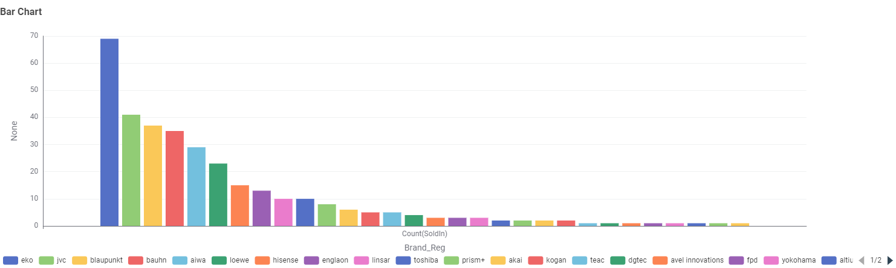
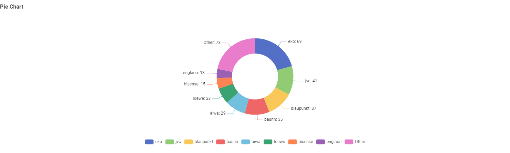
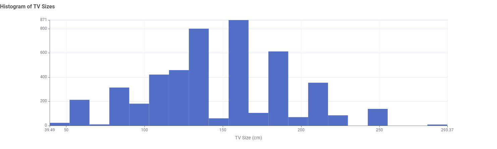
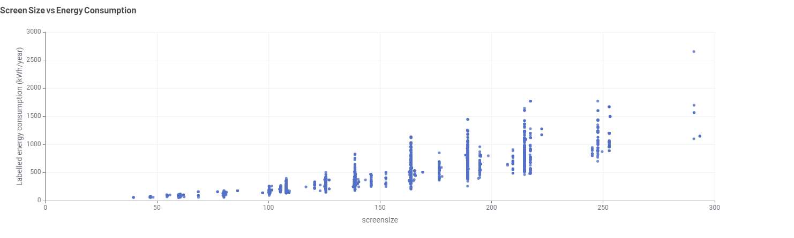
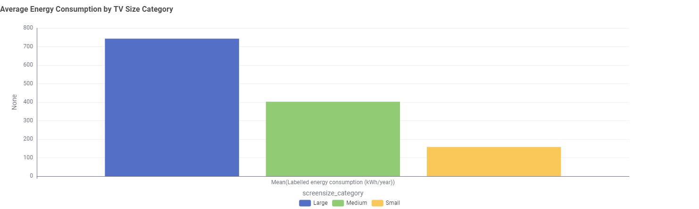
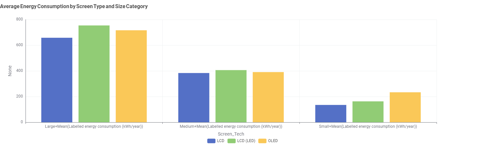

Television Energy Consumption Data Story
An empirical analysis of market availability, screen sizes, and display technologies in Australia.
Chapter 1: Brand Market Distribution in Australia
To understand consumer choice, we first examined which brands offer the highest number of television models currently available for sale in Australia.

Figure 1.1: Total available television models per registered brand in the Australian retail market.

Figure 1.2: Market share breakdown highlighting dominant manufacturers alongside aggregate smaller brands.
Insight: Retail brands such as Eko, JVC, Blaupunkt, Bauhn, and Aiwa lead model diversity in retail stores, giving budget-conscious shoppers a vast array of choices.
Chapter 2: Screen Size vs. Energy Consumption
Does opting for a larger television dramatically impact annual electricity draw? We analyzed continuous screen dimensions against labelled annual power consumption.

Figure 2.1: Frequency distribution histogram of television screen dimensions available in market.

Figure 2.2: Scatter plot of screen size (cm) versus labelled annual energy consumption (kWh/year).
Insight: As shown in Figure 2.2, there is a strong positive correlation between screen surface area and annual kilowatt-hour draw. Energy consumption rises non-linearly once screen sizes exceed 150 cm (~60 inches).
Chapter 3: Size Tiers & Panel Technology Trade-offs
To provide actionable consumer guidance, televisions were categorized into Small (<43"), Medium (44"–65"), and Large (>66") tiers, cross-analyzed with display panel technologies (LCD, LCD LED, OLED).

Figure 3.1: Average annual energy consumption across Small, Medium, and Large screen size categories.

Figure 3.2: Cross-tabulated bar chart comparing mean energy draw by Screen Technology across size tiers.
Insight: Large televisions average ~750 kWh/year compared to Medium (~400 kWh/year) and Small (~150 kWh/year). Furthermore, OLED display technology shows higher baseline power consumption in small/medium sizes due to self-emissive subpixel drive requirements.
Interactive Appliance Energy Calculator
Estimate your home running costs using preset profiles or custom wattage inputs.